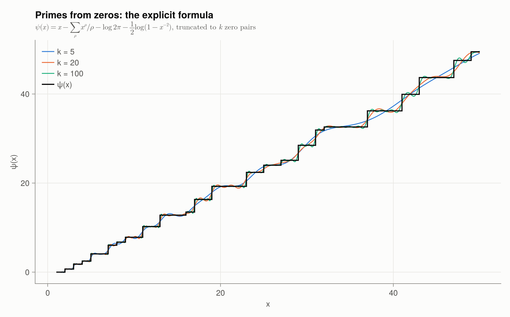
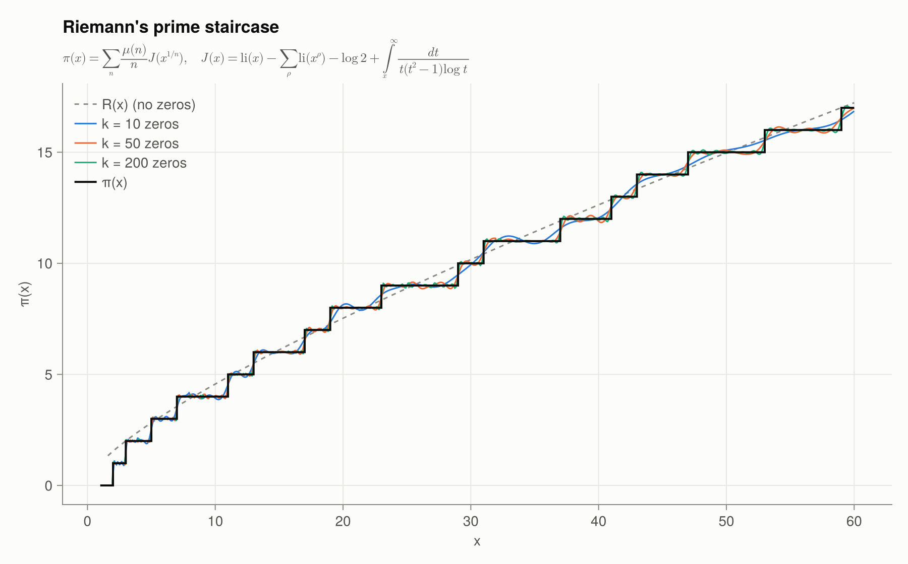

6 · Explicit formulas
Why should the zeros of an analytic function know anything about primes? The explicit formula answers this: primes and zeros are Fourier-dual to each other.
von Mangoldt's formula for ψ
For $x > 1$ not a prime power,
\[\psi(x) = x - \sum_{\rho} \frac{x^\rho}{\rho} - \log 2\pi - \tfrac12 \log\!\left(1 - x^{-2}\right).\]
| term | origin |
|---|---|
| $x$ | the pole of $\zeta$ at $s = 1$ |
| $-\sum_\rho x^\rho/\rho$ | the nontrivial zeros |
| $-\log 2\pi$ | $\zeta'(0)/\zeta(0)$ |
| $-\tfrac12\log(1-x^{-2})$ | the trivial zeros, $\sum_n x^{-2n}/(2n)$ |
Pairing $\rho = \tfrac12 + i\gamma$ with $\bar\rho$, each pair contributes a wave
\[\frac{x^\rho}{\rho} + \frac{x^{\bar\rho}}{\bar\rho} \approx \frac{2\sqrt{x}}{|\rho|}\cos\!\left(\gamma\log x - \arg\rho\right),\]
of frequency $\gamma$ in the variable $\log x$. If some zero had $\beta > \tfrac12$, its wave would grow like $x^\beta$ and swamp the others. RH says that all the waves have the same, smallest possible, amplitude $\sqrt x$.
γ = nontrivial_zeros(300)
psi_explicit(100.5, γ), chebyshev_psi(100.5)(93.7825314685686, 94.0453112293574)With more zeros, the smooth sum sharpens into the staircase $\psi(x)$:
plot_explicit_formula()
Riemann's formula for π(x)
Riemann worked with $J(x) = \sum_{p^k \le x} \frac1k = \sum_{n} \frac{\pi(x^{1/n})}{n}$ and proved
\[J(x) = \operatorname{li}(x) - \sum_\rho \operatorname{li}(x^\rho) - \log 2 + \int_x^\infty \frac{dt}{t(t^2-1)\log t},\]
where $\operatorname{li}(x^\rho)$ means $\operatorname{Ei}(\rho\log x)$. Möbius inversion recovers the primes:
\[\pi(x) = \sum_{n \ge 1} \frac{\mu(n)}{n} J\!\left(x^{1/n}\right).\]
Dropping every zero gives Riemann's $R(x)$. Adding zeros back, one pair at a time, builds the prime staircase out of waves:
riemann_J(100.5), riemann_J_explicit(100.5, γ)(28.533333333333335, 28.476293331444822)primepi_explicit(100.5, γ), primepi(100)(24.942814739413045, 25)plot_prime_staircase()
Consequences of RH for primes
Under RH:
- $|\pi(x) - \operatorname{li}(x)| < \frac{1}{8\pi}\sqrt{x}\log x$ for $x \ge 2657$ (Schoenfeld, 1976);
- $|\psi(x) - x| < \frac{1}{8\pi}\sqrt{x}\log^2 x$ for $x \ge 73.2$;
- there is a prime in every interval $[x, x + C\sqrt{x}\log x]$.
Unconditionally, the best results come from zero-free regions and zero-density estimates; see Chapter 8.
Functions in this chapter
psi_explicit, riemann_J, riemann_J_explicit, primepi_explicit, riemann_R, li.